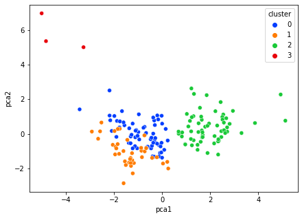

import numpy as np # linear algebra
import pandas as pd # data processing, CSV file I/O (e.g. pd.read_csv)
import matplotlib.pyplot as plt
import seaborn as snsCan we find patterns among countries that are considered “developed”?
df = pd.read_csv('./countries.csv')
df.head()| country | child_mort | exports | health | imports | income | inflation | life_expec | total_fer | gdpp | |
|---|---|---|---|---|---|---|---|---|---|---|
| 0 | Afghanistan | 90.2 | 10.0 | 7.58 | 44.9 | 1610 | 9.44 | 56.2 | 5.82 | 553 |
| 1 | Albania | 16.6 | 28.0 | 6.55 | 48.6 | 9930 | 4.49 | 76.3 | 1.65 | 4090 |
| 2 | Algeria | 27.3 | 38.4 | 4.17 | 31.4 | 12900 | 16.10 | 76.5 | 2.89 | 4460 |
| 3 | Angola | 119.0 | 62.3 | 2.85 | 42.9 | 5900 | 22.40 | 60.1 | 6.16 | 3530 |
| 4 | Antigua and Barbuda | 10.3 | 45.5 | 6.03 | 58.9 | 19100 | 1.44 | 76.8 | 2.13 | 12200 |
df.describe()| child_mort | exports | health | imports | income | inflation | life_expec | total_fer | gdpp | |
|---|---|---|---|---|---|---|---|---|---|
| count | 167.000000 | 167.000000 | 167.000000 | 167.000000 | 167.000000 | 167.000000 | 167.000000 | 167.000000 | 167.000000 |
| mean | 38.270060 | 41.108976 | 6.815689 | 46.890215 | 17144.688623 | 7.781832 | 70.555689 | 2.947964 | 12964.155689 |
| std | 40.328931 | 27.412010 | 2.746837 | 24.209589 | 19278.067698 | 10.570704 | 8.893172 | 1.513848 | 18328.704809 |
| min | 2.600000 | 0.109000 | 1.810000 | 0.065900 | 609.000000 | -4.210000 | 32.100000 | 1.150000 | 231.000000 |
| 25% | 8.250000 | 23.800000 | 4.920000 | 30.200000 | 3355.000000 | 1.810000 | 65.300000 | 1.795000 | 1330.000000 |
| 50% | 19.300000 | 35.000000 | 6.320000 | 43.300000 | 9960.000000 | 5.390000 | 73.100000 | 2.410000 | 4660.000000 |
| 75% | 62.100000 | 51.350000 | 8.600000 | 58.750000 | 22800.000000 | 10.750000 | 76.800000 | 3.880000 | 14050.000000 |
| max | 208.000000 | 200.000000 | 17.900000 | 174.000000 | 125000.000000 | 104.000000 | 82.800000 | 7.490000 | 105000.000000 |
features = ['child_mort', 'exports', 'health','imports', 'income', 'inflation', 'life_expec', 'total_fer', 'gdpp']
feature_df = df[features]
g = sns.pairplot(feature_df)
g.fig.set_size_inches(12,10)Features show high correlation with each other - income + gdpp - fertility + child mortality
feature_df.drop(columns=['gdpp', 'total_fer'], axis=1, inplace=True)
feature_dfc:\Users\anika\AppData\Local\Programs\Python\Python36\lib\site-packages\pandas\core\frame.py:4174: SettingWithCopyWarning:
A value is trying to be set on a copy of a slice from a DataFrame
See the caveats in the documentation: https://pandas.pydata.org/pandas-docs/stable/user_guide/indexing.html#returning-a-view-versus-a-copy
errors=errors,| child_mort | exports | health | imports | income | inflation | life_expec | |
|---|---|---|---|---|---|---|---|
| 0 | 90.2 | 10.0 | 7.58 | 44.9 | 1610 | 9.44 | 56.2 |
| 1 | 16.6 | 28.0 | 6.55 | 48.6 | 9930 | 4.49 | 76.3 |
| 2 | 27.3 | 38.4 | 4.17 | 31.4 | 12900 | 16.10 | 76.5 |
| 3 | 119.0 | 62.3 | 2.85 | 42.9 | 5900 | 22.40 | 60.1 |
| 4 | 10.3 | 45.5 | 6.03 | 58.9 | 19100 | 1.44 | 76.8 |
| ... | ... | ... | ... | ... | ... | ... | ... |
| 162 | 29.2 | 46.6 | 5.25 | 52.7 | 2950 | 2.62 | 63.0 |
| 163 | 17.1 | 28.5 | 4.91 | 17.6 | 16500 | 45.90 | 75.4 |
| 164 | 23.3 | 72.0 | 6.84 | 80.2 | 4490 | 12.10 | 73.1 |
| 165 | 56.3 | 30.0 | 5.18 | 34.4 | 4480 | 23.60 | 67.5 |
| 166 | 83.1 | 37.0 | 5.89 | 30.9 | 3280 | 14.00 | 52.0 |
167 rows × 7 columns
from sklearn import preprocessing
scaler = preprocessing.StandardScaler()
scaled_features = pd.DataFrame(scaler.fit_transform(feature_df), columns=feature_df.columns)
scaled_features| child_mort | exports | health | imports | income | inflation | life_expec | |
|---|---|---|---|---|---|---|---|
| 0 | 1.291532 | -1.138280 | 0.279088 | -0.082455 | -0.808245 | 0.157336 | -1.619092 |
| 1 | -0.538949 | -0.479658 | -0.097016 | 0.070837 | -0.375369 | -0.312347 | 0.647866 |
| 2 | -0.272833 | -0.099122 | -0.966073 | -0.641762 | -0.220844 | 0.789274 | 0.670423 |
| 3 | 2.007808 | 0.775381 | -1.448071 | -0.165315 | -0.585043 | 1.387054 | -1.179234 |
| 4 | -0.695634 | 0.160668 | -0.286894 | 0.497568 | 0.101732 | -0.601749 | 0.704258 |
| ... | ... | ... | ... | ... | ... | ... | ... |
| 162 | -0.225578 | 0.200917 | -0.571711 | 0.240700 | -0.738527 | -0.489784 | -0.852161 |
| 163 | -0.526514 | -0.461363 | -0.695862 | -1.213499 | -0.033542 | 3.616865 | 0.546361 |
| 164 | -0.372315 | 1.130305 | 0.008877 | 1.380030 | -0.658404 | 0.409732 | 0.286958 |
| 165 | 0.448417 | -0.406478 | -0.597272 | -0.517472 | -0.658924 | 1.500916 | -0.344633 |
| 166 | 1.114951 | -0.150348 | -0.338015 | -0.662477 | -0.721358 | 0.590015 | -2.092785 |
167 rows × 7 columns
explain inertia
from sklearn.cluster import KMeans
from sklearn.metrics import silhouette_score
inertia = []
silhouette = []
for num_clusters in range(2,20):
model = KMeans(n_clusters = num_clusters, init='k-means++', random_state=23);
model.fit(scaled_features);
inertia.append(model.inertia_)
silhouette.append(silhouette_score(scaled_features, model.labels_))inert_df = pd.DataFrame({'Num_Clusters':range(2,20), 'Inertia':inertia})
plt.figure(figsize=(12,6))
sns.lineplot(data=inert_df, x="Num_Clusters", y="Inertia", marker='o')
plt.xlabel('Number of clusters')
plt.ylabel('Inertia');
plt.xticks([i for i in range(2,20)]);silh_df = pd.DataFrame({'Num_Clusters':range(2,20), 'Silhouette Score':silhouette})
plt.figure(figsize=(12,6))
sns.lineplot(data=silh_df, x="Num_Clusters", y="Silhouette Score", marker='o')
plt.xlabel('Number of clusters')
plt.ylabel('Silhouette Score');
plt.xticks([i for i in range(2,20)]);6 clusters
model = KMeans(n_clusters = 4, init='k-means++', random_state=23)
preds = model.fit_predict(scaled_features)
scaled_features['cluster'] = predssns.scatterplot(x= 'imports', y='life_expec', hue='cluster', data=scaled_features)<AxesSubplot:xlabel='imports', ylabel='life_expec'>from sklearn.decomposition import PCA
pca= PCA(n_components=2)
reduced_df= pd.DataFrame(pca.fit_transform(scaled_features), columns=['pca1', 'pca2'])
reduced_df['cluster']= scaled_features['cluster']plt.figure(figsize=(7,5))
ax = sns.scatterplot(x='pca1', y='pca2', hue='cluster', data=reduced_df, palette='bright')
cluster_0= df_final_pca.loc[df_final_pca['cluster']==0]
cluster_0['Country'].unique()